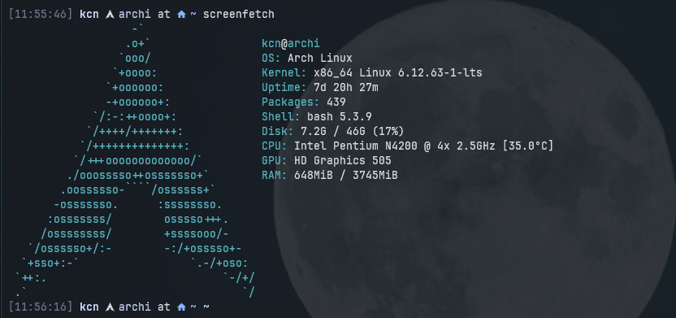

Arch Linux Installation Guide¶
This guide covers everything from initial disk encryption with LUKS through to a fully functional desktop environment with i3 window manager, audio, Bluetooth, power management, and media playback inhibitors.
This is a minimalist configuration tailored for my laptop, designed to use as little RAM as possible — full operational under 400MB after boot. Everything is systemd-based, including WiFi management (iwd), ensuring a lean and efficient system.

- ✅ Full disk encryption (LUKS) and automatic decryption with keyfiles
- ✅ i3 window manager
- ✅ Alacritty terminal
- ✅ Brave with GPU acceleration
- ✅ Audio (PipeWire)
- ✅ Bluetooth
- ✅ WiFi
- ✅ Power management
- ✅ Few modern tools and utilities
Pre-Installation¶
Identify Current Mounts¶
Partition Disk¶
Verify Disk Layout¶
Arch ISO Environment¶
Connect to WiFi¶
Verify Network Connection¶
Set Root Password¶
Enable SSH Server¶
SSH Connection (Optional)¶
Connect from another machine for easier copy-paste:
Disk Partitioning¶
Partition Scheme¶
cfdisk
sda 8:0 0 119.2G 0 disk
├─sda1 8:1 0 100M 0 part /boot/efi
├─sda2 8:2 0 21G 0 part /
├─sda3 8:3 0 25.6G 0 part /home
Load Encryption Modules¶
Encrypt Partitions with LUKS¶
# Encrypt root partition
cryptsetup luksFormat -v -s 512 -h sha512 /dev/sda2
# Encrypt home partition
cryptsetup luksFormat -v -s 512 -h sha512 /dev/sda3
Open and Format Encrypted Partitions¶
# Open the root partition
cryptsetup open /dev/sda2 cryptroot
# Open the home partition
cryptsetup open /dev/sda3 crypthome
# Format root partition
mkfs.ext4 /dev/mapper/cryptroot
# Format home partition
mkfs.ext4 /dev/mapper/crypthome
Mount Partitions¶
# Mount root to /mnt
mount /dev/mapper/cryptroot /mnt
# Create and mount home directory
mkdir /mnt/home
mount /dev/mapper/crypthome /mnt/home
# Create and mount EFI boot partition
mkdir -p /mnt/boot/efi
mount /dev/sda1 /mnt/boot/efi
Base System Installation¶
Install Base Packages¶
Generate Filesystem Table (FSTAB)¶
Enter New System (Chroot)¶
System Configuration¶
Install Text Editor¶
Configure Initramfs for Encryption¶
Edit mkinitcpio configuration:
Find the HOOKS=(...) line and change it to:
Key hooks explained:
- systemd – replaces udev, orchestrates boot process in RAM
- sd-vconsole – replaces keymap and consolefont, reads /etc/vconsole.conf for keyboard layout
- sd-encrypt – systemd-based LUKS encryption support
Set Keyboard Layout¶
Generate Kernel Image¶
Bootloader (GRUB)¶
Install GRUB¶
Get Root Partition UUID¶
Configure GRUB¶
Edit /etc/default/grub:
Set the following lines:
GRUB_CMDLINE_LINUX_DEFAULT="loglevel=3 quiet rd.luks.name=YOUR-UUID-SDA2=cryptroot root=/dev/mapper/cryptroot rw"
GRUB_DISABLE_OS_PROBER=false
Install GRUB to EFI¶
Generate GRUB Configuration¶
Automatic Decryption (Keyfiles)¶
Set Permissions and Generate Keys¶
chmod 700 /etc/cryptsetup-keys.d
# Generate key for ROOT (sda2)
dd if=/dev/urandom of=/etc/cryptsetup-keys.d/root.key bs=512 count=4
chmod 600 /etc/cryptsetup-keys.d/root.key
cryptsetup luksAddKey /dev/sda2 /etc/cryptsetup-keys.d/root.key
# Generate key for HOME (sda3)
dd if=/dev/urandom of=/etc/cryptsetup-keys.d/home.key bs=512 count=4
chmod 600 /etc/cryptsetup-keys.d/home.key
cryptsetup luksAddKey /dev/sda3 /etc/cryptsetup-keys.d/home.key
Add Root Key to Initramfs¶
Edit /etc/mkinitcpio.conf:
Add:
Add Home Key to Crypttab¶
echo "crypthome UUID=$(blkid -s UUID -o value /dev/sda3) /etc/cryptsetup-keys.d/home.key luks" >> /etc/crypttab
Rebuild Initramfs¶
Add Root Key to GRUB¶
sed -i 's|GRUB_CMDLINE_LINUX_DEFAULT=.*|GRUB_CMDLINE_LINUX_DEFAULT="loglevel=3 quiet rd.luks.name=07ce5469-d3fb-4ad6-9e1c-e149570664f9=cryptroot root=/dev/mapper/cryptroot rd.luks.key=07ce5469-d3fb-4ad6-9e1c-e149570664f9=/etc/cryptsetup-keys.d/root.key rw"|' /etc/default/grub
Tip: Use this nvim command to insert UUID:
1. Position cursor where UUID should go
2. Type: :r !blkid -s UUID -o value /dev/sda2
3. UUID will be inserted at cursor position
Final System Configuration¶
Set Timezone¶
Configure NTP (Time Synchronization)¶
Edit /etc/systemd/timesyncd.conf:
NTP=0.arch.pool.ntp.org 1.arch.pool.ntp.org 2.arch.pool.ntp.org 3.arch.pool.ntp.org
FallbackNTP=0.pool.ntp.org 1.pool.ntp.org
Enable time synchronization:
Set Locale¶
Edit /etc/locale.gen and uncomment:
Generate locale files:
Set system language:
Set Hostname¶
Create User¶
Create user with home directory and add to wheel group for sudo:
Set user password:
Install and Configure Sudo¶
Set system editor:
Edit sudoers file:
Uncomment this line:
Essential System Tools¶
iwd (WiFi Management)¶
Create DNS symlink:
Configure iwd:
SSH Server¶
zRAM (Compressed Swap in RAM)¶
Configure zRAM:
Reboot into New System¶
Desktop Environment Setup¶
Xorg Display Server¶
xorg-server– core display serverxorg-xinit– manual start capability (startx)xorg-xrandr– resolution and monitor management
Note: We don't install xorg-drivers meta-package (too much bloat)
Auto-start X on Login¶
Edit bash profile:
Create xinitrc:
Intel GPU Driver¶
i3 (Window Manager)¶
Picom (Compositor)¶
Create config directory:
Configure picom:
backend = "glx";
vsync = true;
shadow = true;
shadow-radius = 8;
shadow-offset-x = -4;
shadow-offset-y = -4;
opacity-rule = [
"90:class_g = 'Alacritty'"
];
Auto-start in i3:
Fonts¶
Install Fonts¶
sudo pacman -S ttf-jetbrains-mono
sudo pacman -S ttf-jetbrains-mono-nerd
sudo pacman -S ttf-font-awesome
sudo pacman -S fontconfig
Configure Font Rendering¶
<?xml version="1.0"?>
<!DOCTYPE fontconfig SYSTEM "fonts.dtd">
<fontconfig>
<match target="font">
<edit name="hinting" mode="assign"><bool>true</bool></edit>
<edit name="hintstyle" mode="assign"><const>hintslight</const></edit>
<edit name="antialias" mode="assign"><bool>true</bool></edit>
<edit name="rgba" mode="assign"><const>rgb</const></edit>
</match>
</fontconfig>
Refresh Font Cache¶
Set i3 Font¶
Edit i3 config:
Terminal Emulator (Alacritty)¶
Install Alacritty¶
Configure Alacritty¶
[font]
size = 8.5
[font.normal]
family = "JetBrainsMono Nerd Font Mono"
style = "Regular"
[font.bold]
family = "JetBrainsMono Nerd Font Mono"
style = "Bold"
[font.italic]
family = "JetBrainsMono Nerd Font Mono"
style = "Italic"
[window]
padding = { x = 6, y = 6 }
[env]
TERM = "xterm-256color"
Add Terminal Keybinding to i3¶
Audio (PipeWire)¶
Install PipeWire¶
Enable Audio Services¶
Important: Use --user flag (user service, not system-wide):
Verify Audio Works¶
Volume Control Keybindings¶
Edit i3 config:
# Auto-start audio services
exec --no-startup-id /usr/bin/pipewire
exec --no-startup-id /usr/bin/wireplumber
# Volume keybindings
bindsym XF86AudioRaiseVolume exec --no-startup-id pactl set-sink-volume @DEFAULT_SINK@ +5%
bindsym XF86AudioLowerVolume exec --no-startup-id pactl set-sink-volume @DEFAULT_SINK@ -5%
bindsym XF86AudioMute exec --no-startup-id pactl set-sink-mute @DEFAULT_SINK@ toggle
Screen Brightness¶
Install Brightness Control¶
sudo pacman -S brightnessctl
# Add user to video group (allows control without sudo)
sudo usermod -aG video $USER
Brightness Keybindings¶
Edit i3 config:
bindsym XF86MonBrightnessUp exec --no-startup-id brightnessctl set +10%
bindsym XF86MonBrightnessDown exec --no-startup-id brightnessctl set 10%-
Bluetooth¶
Install Bluetooth Stack¶
# Install bluetooth backend
sudo pacman -S bluez bluez-utils
# Enable bluetooth service
sudo systemctl enable --now bluetooth
Manage Bluetooth Devices¶
Use bluetoothctl command-line tool:
Commands inside bluetoothctl:
Optional: Blueman GUI¶
Auto-start in i3:
Web Browser (Brave)¶
Install AUR Helper (yay)¶
sudo pacman -S --needed base-devel git
git clone https://aur.archlinux.org/yay-bin.git
cd yay-bin
makepkg -si
Install Brave Browser¶
Enable GPU Acceleration in Brave¶
- Open Brave and navigate to:
brave://flags - Find and set to Enabled:
- Override software rendering list (forces GPU usage)
- Hardware-accelerated video decode (offloads video to GPU)
-
GPU Rasterization
-
Verify GPU acceleration:
brave://gpu - Look for green "Hardware accelerated" entries
Brave Keybindings¶
Edit i3 config:
# Launch YouTube as web app
bindsym $mod+y exec brave --app=https://youtube.com --class=YoutubeApp
# Launch full Brave browser
bindsym $mod+Shift+y exec brave
Additional Tools¶
System Utilities¶
btop– system monitorscreenfetch– system info displaybat– cat replacement with syntax highlightingeza– ls replacement with colorsfzf– fuzzy finderfd– find replacementripgrep– grep replacement
Starship Prompt¶
Laptop Hardware Keys¶
Unblock Wireless Devices¶
# Check blocked devices
rfkill list
# Unblock WiFi
sudo rfkill unblock wifi
# Unblock Bluetooth
sudo rfkill unblock bluetooth
# Or unblock everything
sudo rfkill unblock all
Suspend on Lid Close¶
Check if hardware detects lid state:
If you see open/closed → hardware works correctly.
Configure Lid Switch Behavior¶
Edit logind configuration:
Apply changes:
Suspend After Idle Time¶
Edit logind configuration:
Prevent Suspend During Media Playback¶
Install PlayerCTL¶
Create Inhibitor Script¶
#!/bin/bash
while true; do
if playerctl status 2>/dev/null | grep -q Playing; then
systemd-inhibit \
--what=sleep \
--why="Media playback" \
--mode=block \
sleep 30
else
sleep 30
fi
done
Make executable:
Create systemd User Service¶
[Unit]
Description=Block suspend while media is playing
[Service]
ExecStart=%h/.local/bin/media-inhibit.sh
Restart=always
[Install]
WantedBy=default.target
Enable Service¶
Test Inhibitor¶
Check if inhibitor is active during media playback: